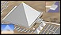

Valley temple
At the end of the causeway was the valley temple. Some experts believe that the valley temple was where the pharaoh's funeral began.
None of this building survives today. But archaeologists believe that there was once a valley temple because other pyramids had them.